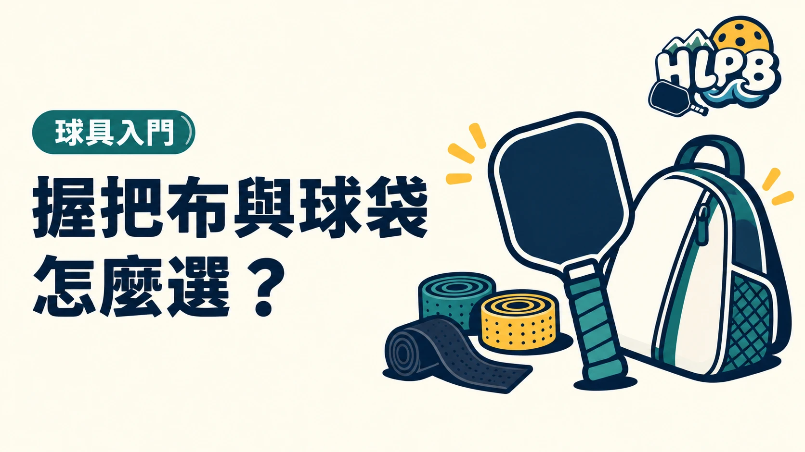

配件先看自己缺什麼：握不穩，處理握把；收不好，再挑拍套或球袋。
握把布
- 吸汗或乾式款：可以實際比較流手汗時的握感。
- 黏性款：適合想試較有黏握感的人，仍要確認流汗後好不好拿。
- 多纏一層會增加握把周長與重量。
拍套與球袋
- 一支拍：先確認拍套是否裝得下整支球拍。
- 多支拍和用球：先核對球袋尺寸及分隔方式。
- 有其他隨身用品：確認需要的容量，不用只看外觀。
買球袋時，可以拿目前使用的球拍實際比對。護目鏡則是另一種用途，可另讀匹克球護目鏡選擇。
先處理使用問題，再補齊配件
配件可以分成握持、表面保護與收納三種用途。握把需要更換，不代表同時需要新球袋；已有合適球袋，也不表示球拍可以和濕用品一起放。先寫下目前遇到的問題，再對應需要的用品，較不容易買到用途重複的東西。
| 用品 | 主要用途 | 買前核對 |
|---|---|---|
| 握把布 | 處理握持表面與粗細 | 替換型或外層型，纏後周長與重量 |
| 護邊貼 | 減少拍緣碰擦 | 適用寬度、安裝限制及重量 |
| 拍套 | 單支拍的表面保護 | 總長、拍寬、厚度與拉鍊空間 |
| 球袋 | 集中攜帶球拍與用品 | 隔層、實際裝載需求與清潔方式 |
配件裝上去，也要重新看整支拍
握把布、護邊與配重都可能改變成品狀態。換過配件後，重新記錄重量並試握，避免把新感受全部歸因於球拍老化。準備參賽時，也要核對該賽事的改裝規範；外觀可以裝得下，不代表所有安裝方式都符合器材限制。
收納容量不用只看『能放幾支拍』
將實際要帶的球、水、毛巾與其他用品列出來，再檢查分隔方式。貼身或汗濕用品另行整理，乾燥後再收拍。這是 HLPB 的選購與收納建議；具體清潔與保養仍依配件原廠說明。
參考：Selkirk 握把指南。收納部分為 HLPB 選購檢查建議。
最後查證：2026-10-19｜資料來源：Selkirk 握把指南；HLPB 選購檢查建議
返回文章列表